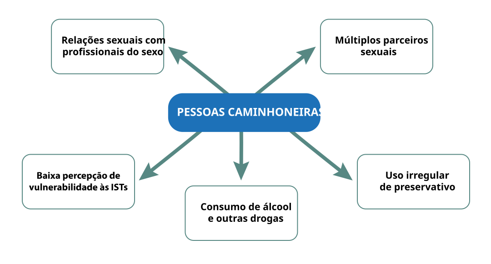
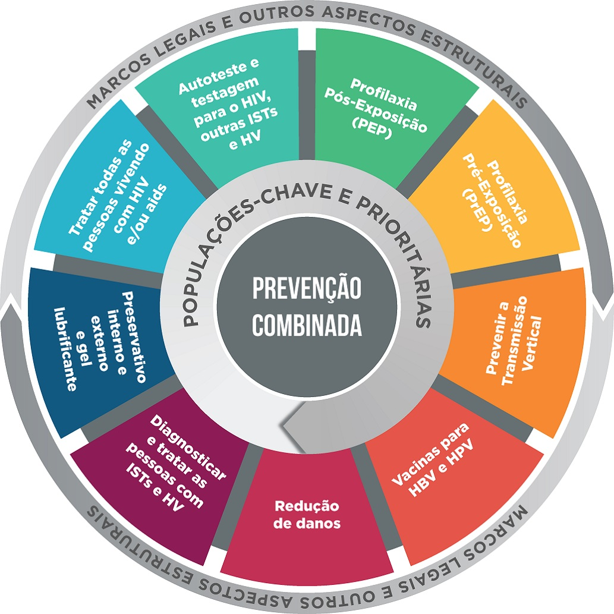

Apresentação do Módulo
Agora que você já conhece a realidade e os principais desafios enfrentados pelo público caminhoneiro, damos boas-vindas ao Módulo II! Aqui, convidamos você a aprofundar seus conhecimentos sobre o cuidado integral à caminhoneira e ao caminhoneiro nas Infecções Sexualmente Transmissíveis (IST).
Ao longo do módulo, serão abordados aspectos relacionados à epidemiologia, prevenção, diagnóstico, manejo clínico e estratégias de ampliação do acesso aos serviços de saúde. A proposta é fortalecer sua atuação na promoção da saúde, contribuindo para o diagnóstico precoce, o tratamento oportuno e a redução das vulnerabilidades no contexto das estradas.
Assim, esse é o momento de dar o próximo passo: que tal iniciar este módulo com um olhar atento e comprometido com a realidade das estradas? Ao avançar, você terá a oportunidade de refletir sobre sua prática e ampliar seu potencial de cuidado. Vamos começar?
Objetivos de Aprendizagem
- Conhecer os aspectos epidemiológicos das Infecções Sexualmente Transmissíveis e hepatites virais, incluindo prevalências, fatores comportamentais de risco e vulnerabilidades associadas à alta mobilidade geográfica.
- Identificar estratégias de ampliação de acesso e oferta das testagens para Infecções Sexualmente Transmissíveis na população caminhoneira.
- Reconhecer a importância do cuidado integral às pessoas diagnosticadas com Infecções Sexualmente Transmissíveis e hepatites virais.
- Compreender a relevância do acesso às diferentes tecnologias de prevenção de Infecções Sexualmente Transmissíveis, incluindo a Profilaxia Pré-Exposição (PrEP) e a Profilaxia Pós-Exposição (PEP).
- Reconhecer os protocolos de manejo, de fluxos de notificação vigentes e de vigilância epidemiológica que garantem a continuidade do cuidado às caminhoneiras e aos caminhoneiros.
2.1 Infecções Sexualmente Transmissíveis que mais acometem caminhoneiras e caminhoneiros
Nesta seção você vai estudar as principais IST que causam impacto na saúde pública global, especialmente na saúde das caminhoneiras e dos caminhoneiros.
Sífilis
Entre as IST, a sífilisA sífilis é uma infecção bacteriana sistêmica, crônica e curável causada pelo Treponema pallidum. Pode ser transmitida por contato sexual (oral, vaginal ou anal) por contato direto com as lesões sem preservativos ou da pessoa gestante para o feto durante a gestação e no momento do parto. O diagnóstico precoce e o tratamento oportuno são fundamentais para interromper a cadeia de transmissão. merece destaque devido à sua elevada prevalência e ao fato de ser uma infecção curável. Clique nos cards abaixo e confira.
Informações importantes sobre a sífilis
Clique nos itens para acessar o conteúdo.
Mas, como não existe imunidade protetora, os indivíduos que foram curados podem se reinfectar se tiverem contato com o treponema novamente.
Todos(as) os(as) parceiros(as) sexuais devem ser tratados para evitar reinfecção caso tenham contato com o treponema novamente.
Fonte: elaboração das autoras, 2026.
Quando não tratada, a sífilis pode evoluir cronicamente para estágios de gravidade variada (primária, secundária e terciária), com períodos de atividade (sintomática) e latência (assintomática), conforme demonstrado abaixo.
Estágios e manifestações clínicas da sífilis
Clique nos itens para acessar o conteúdo.
Manifestações clínicas
- Úlcera genital única (cancro duro) indolor, com base endurecida e fundo limpo.
- Aparece em órgãos genitais e extragenitais.
- Linfonodos regionais indolores que não formam úlceras.
- Lesões cutaneomucosas sintomáticas (indolores e não pruriginosas).
- Sintomas gerais (mal-estar, anorexia, cefaleia, artralgia, febre) e micropoliadenopatia (íngua).
- Pode acometer olhos (uveíte), rins (síndrome nefrótica), fígado, baço, coração, ossos, articulação e SNC.
- Latente recente.
Estágios da sífilis adquirida
O cancro duro surge, em média, três semanas após o contato, e desaparece sem cicatriz em 2 a 6 semanas, com ou sem tratamento.
As lesões aparecem de 6 semanas a 6 meses após o contato, e desaparecem espontaneamente, sem cicatrizes, em 4 a 12 semanas. Podem reaparecer na fase latente, em intervalos não definidos.
Assintomática com reaparecimento das lesões da sífilis secundária.
Manifestações clínicas
- Quadro cutâneo destrutivo e formação de gomas sifilíticas que podem ocorrer em qualquer órgão.
- Acometimento cardiovascular, neurológico e ósseo.
- Latente tardia.
Estágios da sífilis adquirida
- Aparecem de 2 a 40 anos após o contato.
- Assintomática.
Fonte: elaboração das autoras, 2026.
O risco de transmissão é maior nas duas primeiras fases da infecção, devido à presença de lesões típicas na sífilis primária (cancro duro) e secundária (lesões cutaneomucosas), ricas em treponema (Rowley et al., 2019; Brasil, 2022).
Você sabia que as caminhoneiras e os caminhoneiros representam um grupo estratégico para intervenções em saúde pública?
Diversos estudos de prevalência de sífilis mostram taxas variáveis dessa infecção, geralmente maiores do que na população geral, devido a diferentes comportamentos — como: uso irregular de preservativos; múltiplas parcerias; contatos sexuais casuais em rodovias e dificuldade de acesso ao cuidado (informação, testagem e tratamento) (Oliveira; Araújo, 2025; Brasil, 2022).
Vírus da Imunodeficiência Humana (HIV)
E quanto ao vírus da imunodeficiência humana (HIV)Muitas pessoas podem permanecer assintomáticas por longos períodos, o que reforça a importância da testagem regular e do diagnóstico precoce. O tratamento adequado permite melhorar a qualidade de vida e reduzir significativamente o risco de transmissão. Quando não tratada pode evoluir para a aids, que é definida pela presença de infecções oportunistas graves e ocorre quando a contagem de CD4 cai para < 200/mcL. Não se esqueça que a presença e a coinfecção com outras ISTs aumentam o risco de aquisição e transmissão do HIV.? Sabia que essa infecção ainda representa um grave problema de saúde pública, e que pode ser transmitido por via sexual, sanguínea ou transmissão vertical (de mãe para filho)?
Na fase aguda, período de maior transmissibilidade, pode ser assintomática ou causar sintomas inespecíficos, como febre, linfadenopatia (ínguas), faringite, exantema, mialgia, cefaleia, mal-estar, letargia e ulceração da membrana mucosa.
Após essa fase, ocorre a disseminação para diversos órgãos e tecidos, e muitos pacientes, mesmo sem tratamento, podem não apresentar sintomas — ou apenas de maneira intermitente e inespecífica — por 2 a 15 anos.
Hepatites B (HBV) e C (HCV)
As hepatites B e C também são infecções importantes no contexto das IST. Anorexia, mal-estar, febre, náuseas, vômitos e icterícia são sintomas típicos das hepatites virais agudas. Podem evoluir de forma silenciosa e, em alguns casos, tornar-se crônicas, levando a complicações hepáticas graves. A ampliação do acesso ao diagnóstico e ao tratamento é essencial para o controle dessas infecções.
A hepatite BA infecção causada pelo HBV pode cursar de forma aguda e autolimitada ou evoluir para a forma crônica, caracterizada pela detecção de HBsAg no sangue por mais de 6 meses. Quando a infecção ocorre em um indivíduo adulto, a probabilidade de se tornar portador crônico varia entre 5% a 10% (Asendem et al., 2024). Tanto a infecção aguda quanto a crônica podem apresentar desde quadros assintomáticos ou com sinais/sintomas moderados até quadros mais graves (cirrose e hepatocarcinoma) e, mais raramente, hepatite fulminante (BRASIL, 2024)., causada pelo vírus da hepatite B (HBV), e a hepatite CCausada pelo vírus da hepatite C (HCV), sendo mais comumente transmitida pelo sangue e raramente transmitida por via sexual ou vertical. A hepatite C torna-se crônica em 75% dos pacientes, podendo evoluir para cirrose hepática e hepatocarcinoma. Manifestações clínicas extra-hepáticas como vasculite cutânea, glomerulonefrite, porfiria cutânea tardia, crioglobulinemia mista e linfoma não Hodgking de células B também podem ser observadas., causada pelo vírus da hepatite C (HCV), são infecções virais transmitidas principalmente por contato com sangue contaminado, relações sexuais desprotegidas e transmissão vertical. Ambas representam importantes problemas de saúde pública, devido ao risco de evoluírem para formas crônicas graves como cirrose e carcinoma hepatocelular.
O tratamento da forma crônica da hepatite B inclui antivirais que reduzem a replicação do vírus e o risco de complicações hepáticas (Brasil, 2024d). Na hepatite C, embora não exista vacina disponível, os medicamentos antivirais de ação direta (AADs) utilizam múltiplos esquemas medicamentosos para impedir a replicação do vírus e são eficazes contra todos os genótipos, sendo possível a cura em mais de 95% dos pacientes.
Além disso, novas estratégias para promover o encaminhamento para o tratamento da hepatite C e a adesão aos AADs devem ser baseadas na coordenação do cuidado, início acelerado dos AADs e educação do paciente, particularmente para populações prioritárias (Brasil, 2024d; Lo Re et al., 2025).
Outras Infecções Sexualmente Transmissíveis
Na interação abaixo estão descritas outras IST que também podem acometer as caminhoneiras e os caminhoneiros e devem ser reconhecidas no contexto da prática em saúde.
Quadro 2. Infecções Sexualmente Transmissíveis
Clique nos itens para acessar o conteúdo.
 Neisseria
gonorrhoeae
Chlamydia
trachomatis
Neisseria
gonorrhoeae
Chlamydia
trachomatis
Síndrome/IST associada
- Contato sexual com secreções infectadas.
- Contato da mãe para a criança (perinatal).
- Secreção purulenta no epitélio da uretra e colo uterino (endocervicite), faringe, reto (relação oral ou anal) e/ou conjuntiva.
- Quando não tratadas, podem evoluir para doença inflamatória pélvica (DIP), gravidez ectópica e infertilidade nas mulheres, epididimite unilateral, prostatite e infertilidade nos homens, ou infecção gonocócica disseminada (IGD).
- A maioria das mulheres são assintomáticas (cerca de 90%).
- Nos homens, as taxas variam de 56% a 87%, sendo a uretrite aguda a manifestação mais comum.
- Tratamento empírico com ceftriaxona + azitromicina/doxiciclina.
- Quanto à gonorreia, a resistência farmacológica é um problema crescente.
- Handsfield; Sparling, 1995.
- Rowley et al., 2019.
- Brasil, 2022.
 Haemophilus
ducreyi
Herpes simplex
Haemophilus
ducreyi
Herpes simplex
Síndrome/IST associada
- Após 3–7 dias de incubação, surgem pequenas pápulas dolorosas na pele genital ou mucosas, que rapidamente se rompem, formando úlceras múltiplas, acompanhadas ou não de dor, ardor, prurido, drenagem de material mucopurulento, sangramento e linfadenopatia regional.
- No cancro, as lesões podem apresentar exsudato necrótico, amarelado e com odor fétido.
- O cancro é mais comum em homens, e provoca úlceras cutâneas na pele e nas mucosas genitais.
- Tanto o HSV‐1 quanto o HSV‐2 podem causar lesões genitais, devido ao aumento de práticas sexuais orais sem proteção; entretanto, o HSV-2 é mais frequentemente associado à recorrência.
- Brasil, 2016.
- Sauerbrei, 2016.
 Chlamydia
trachomatis
Neisseria
gonorrhoeae
Trichomonas
vaginalis
Chlamydia
trachomatis
Neisseria
gonorrhoeae
Trichomonas
vaginalis
Síndrome/IST associada
- Corrimento vaginal intenso, amarelo-esverdeado, por vezes acinzentado, bolhoso e espumoso, acompanhado de odor com presença de microulcerações que dão ao colo uterino um aspecto de morango ou framboesa.
- Dor pélvica e sangramento.
- Infecta mais mulheres do que homens.
- Pode ser assintomática.
- Coinfecção com gonorreia e outras IST é um achado comum.
 Papilomavírus humano
(HPV)
Papilomavírus humano
(HPV)
Síndrome/IST associada
- Contato direto (pele ou mucosa infectada).
- Contato indireto (superfícies contaminadas).
- Pode causar desde manifestações subclínicas, passando por várias doenças benignas da pele e mucosas, e culminando com lesões pré‐malignas e neoplasias.
- As verrugas na região genital e anal são conhecidas como condilomas acuminados.
- Há mais de 200 tipos que infectam humanos.
- Os tipos 16 e 18 são de alto risco oncogênico: responsáveis por, aproximadamente, 70% dos cânceres cervicais, além de outros cânceres como de vulva, vagina, pênis, ânus e orofaringe.
- Magalhães et al., 2021.
- Brasil, 2024a.
 Vírus T-linfotrópico humano
tipo 1
Vírus T-linfotrópico humano
tipo 1
Síndrome/IST associada
- Contato com sangue.
- Contato sexual.
- De mãe para filho (durante gestação, parto ou amamentação).
- Geralmente assintomática.
- Pode causar doenças graves como a leucemia/linfoma de células T adulto (LTA) e mielopatia associada ao HTLV (HAM), além de outros quadros inflamatórios como uveíte e dermatites.
- Não existe vacina nem tratamento que proporcione a cura.
- A adoção de medidas de controle e prevenção, similares às do HIV, são essenciais para interromper a transmissão.
Fonte: elaboração das autoras, 2026.
2.2 Epidemiologia das Infecções Sexualmente Transmissíveis em caminhoneiras e caminhoneiros
Agora, nesta seção, vamos nos aprofundar em como os diferentes contextos de vulnerabilidade (ocupacional e/ou comportamental) vivenciados pelas caminhoneiras e caminhoneiros afetam a ocorrência de IST entre essa população.
Um estudo recente comparou os principais contextos de vulnerabilidade em saúde sexual entre a população geral do Brasil e caminhoneiras e caminhoneiros, observando que estas estão mais vulneráveis às IST devido às condições ocupacionais e comportamentais associadas à profissão. Quando comparadas à população geral, caminhoneiras e caminhoneiros apresentaram maior exposição a comportamentos sexuais de risco (novas ou múltiplas parcerias sexuais ocasionais, história prévia ou presença de alguma IST), menor frequência de prevenção (uso irregular de preservativos, consumo de álcool e/ou outras drogas). Segundo os autores, a rotina de viagens longas e o contexto das estradas favorecem situações de risco e dificultam ações contínuas de prevenção (Santos et al., 2026).
Figura 2. Fatores de riscos associados às Infecções Sexualmente Transmissíveis em caminhoneiras e caminhoneiros

Fonte: elaboração das autoras, 2026.
Além disso, o baixo nível de conhecimento sobre modos de prevenir IST, assim como a baixa oferta de preservativos e de testagem rápida nas rodovias, aliados às exigências ocupacionais do cargo — intensa mobilidade geográfica; rotina de viagens longas e jornadas de trabalho exaustivas — atuam, na maioria das vezes, como barreira à busca por tratamentos adequados e ações contínuas de prevenção (McCree et al., 2010; Oliveira; Araújo, 2025; Santos et al., 2026).
Anualmente, as IST afetam milhões de pessoas em todo o mundo, com uma incidência de 374 milhões de casos de IST curáveis em pessoas de 15 a 49 anos; no Brasil, há registro de 10 a 12 milhões de casos novos por ano (WHO, 2025).
Agora, pense: como você pode contribuir para reduzir as vulnerabilidades às IST entre caminhoneiras e caminhoneiros, considerando suas especificidades e os desafios do contexto das estradas?
2.3 Importância do acesso aos testes rápidos e autotestes em locais estratégicos
Nesta seção, você vai entender como o uso de testes rápidos e autotestes pode otimizar o acesso e o diagnóstico das infecções pelo HIV, sífilis e hepatites B e C em caminhoneiras e caminhoneiros. Vamos lá?
Os testes rápidos são ferramentas importantes para ampliar o acesso aos exames e para proporcionar o diagnóstico precoce de infecções como HIV, sífilis e hepatites B e C, permitindo respostas ágeis e o encaminhamento oportuno para assistência médica e início do tratamento (Brasil, 2022).
Observe, nas abas abaixo, as etapas do teste rápido.
Etapas da testagem rápida
Clique nos itens para acessar o conteúdo.
Os procedimentos de pré-teste envolvem um conjunto de etapas que devem ser realizadas antes da execução do teste rápido para garantir segurança, qualidade e acolhimento adequado ao usuário. Nessa fase, é necessário que o profissional esteja capacitado, verifique os componentes e a validade dos kits, assegure o armazenamento correto dos insumos e organize adequadamente a área de trabalho com todos os materiais necessários. Também inclui o acolhimento do usuário de forma cordial e sigilosa, esclarecendo dúvidas, explicando como será realizada a coleta e o tempo para obtenção do resultado. Além disso, devem ser investigados aspectos importantes do histórico da pessoa, como exposições de risco, testagens anteriores e possibilidade de janela imunológica, bem como fornecer orientações sobre prevenção, possibilidade de resultados reagentes ou não reagentes e os encaminhamentos necessários após a testagem.
A etapa de testagem corresponde à execução do teste rápido propriamente dita e deve ser realizada seguindo rigorosamente as orientações do fabricante e os protocolos do serviço de saúde. Inicialmente, o profissional deve utilizar os equipamentos de proteção individual (EPI) e preparar o dispositivo de teste, identificando-o corretamente. Em seguida, realiza-se a coleta da amostra, geralmente por punção digital, garantindo o volume adequado de sangue e evitando contaminações ou presença de bolhas de ar na pipeta coletora. A amostra é aplicada no dispositivo e o diluente é adicionado conforme as instruções do kit. É fundamental controlar o tempo de leitura indicado pelo fabricante e, quando mais de um teste for realizado, respeitar a sequência e os volumes de amostra específicos de cada teste, garantindo a qualidade e a confiabilidade dos resultados.
A etapa de pós-teste envolve a interpretação dos resultados, a comunicação ao usuário e os encaminhamentos necessários na rede de atenção à saúde. O profissional deve verificar a presença da linha de controle para confirmar a validade do teste e interpretar o resultado como reagente ou não reagente conforme as linhas observadas no dispositivo. Em caso de resultado reagente, é necessário seguir os fluxogramas diagnósticos recomendados pelo Ministério da Saúde e encaminhar o usuário para realização de testes complementares e acompanhamento nos serviços de referência. Além disso, devem ser fornecidas orientações sobre prevenção, tratamento disponível no SUS e a importância da testagem de parcerias. Também é fundamental registrar adequadamente os resultados e estar atento a possíveis intercorrências, como testes inválidos ou suspeita de resultados falsos, adotando as medidas recomendadas nesses casos.
Fonte: elaboração das autoras, 2026.
O autoteste para HIV também é recomendado, pois é uma estratégia que permite que a própria pessoa realize a testagem de forma autônoma, sob orientações do fabricante conforme vídeo. Os principais benefícios são:
- Garantia de maior sigilo e privacidade;
- Fortalecimento da autonomia do usuário;
- Possibilidade de reduzir barreiras relacionadas ao estigma.
É importante que você, profissional, reforce com o usuário que resultados reagentes devem sempre ser confirmados com novos exames laboratoriais fornecidos pelos serviços de saúde, onde a pessoa poderá receber orientação e acompanhamento adequados (WHO, 2016).
O diagnóstico precoce das IST é fundamental para possibilitar o início oportuno do tratamento e para a interrupção da cadeia de transmissão. Nesse contexto, a testagem rápida constitui uma estratégia fundamental para a ampliação do acesso aos serviços de saúde, especialmente entre populações que enfrentam maiores barreiras de acesso, como as caminhoneiras e os caminhoneiros.
Entretanto, a efetividade dessa estratégia pode ser limitada por diferentes aspectos estruturais, sociais e culturais, que dificultam tanto a realização da testagem quanto o acesso oportuno ao cuidado. Entre elas se destacam o estigma associado à testagem, as desigualdades no acesso aos serviços de saúde e as restrições relacionadas ao tempo e à mobilidade, fatores que impactam de forma mais intensa determinados grupos populacionais, como caminhoneiras e caminhoneiros.
Dica: A adesão à testagem depende de boas práticas de acolhimento, confidencialidade, informação explícita, de um fluxo adequado de encaminhamento e atuação integrada dos profissionais de saúde.
No contexto das ações de saúde voltadas às caminhoneiras e aos caminhoneiros, você, profissional de saúde, deve adotar uma postura ativa na oferta da testagem, aproveitando diferentes oportunidades de contato com essa população. Algumas estratégias práticas incluem:
- Ofertar testagem de forma proativa;
- Realizar ações extramuros em locais estratégicos, como postos de combustível e Pontos de Parada e Descanso (PPD);
- Integrar a testagem às ações de rotina, como campanhas;
- Garantir acolhimento e escuta qualificada, reduzindo barreiras de estigma;
- Explicar o procedimento e o resultado de forma objetiva, favorecendo a compreensão do usuário;
- Organizar o fluxo de atendimento;
- Encaminhar imediatamente os casos reagentes (positivos) para confirmação e tratamento;
- Orientar sobre prevenção e cuidado contínuo;
- Articular com a rede de saúde para garantir continuidade do cuidado, especialmente considerando a mobilidade dessa população.
A efetividade dessas ações também depende da articulação intersetorial entre saúde, setor de transporte, empresas, sindicatos e concessionárias das estradas, para ampliar o acesso à prevenção, testagem e cuidado entre caminhoneiros.
2.4 Estratégia de cuidado integral às pessoas diagnosticadas com Infecções Sexualmente Transmissíveis
Após a identificação de um diagnóstico de IST, é fundamental garantir o acesso ao tratamento e à prevenção. O cuidado integral envolve não apenas diagnóstico e tratamento, mas também acolhimento, orientação, acompanhamento e articulação com a rede de saúde.
Na prática, após um resultado reagente (positivo), o profissional deve realizar o acolhimento e o aconselhamento pós-teste, explicando o resultado de forma acessível ao usuário. Sempre que indicado, o tratamento deve ser iniciado o mais rápido possível, preferencialmente no mesmo atendimento, evitando perdas de seguimento. Além disso, é essencial orientar sobre medidas de prevenção e redução de riscos, abordar as parcerias sexuais e encaminhar o usuário para acompanhamento, quando necessário. O registro e a notificação do caso também devem ser realizados conforme as normas vigentes (Brasil, 2022).
Você busca garantir um cuidado integral que vá além do diagnóstico, promovendo acolhimento, vínculo e continuidade do acompanhamento?
O manejo clínico e o cuidado oportuno das IST são fundamentais para reduzir complicações e interromper a cadeia de transmissão. A sífilis merece destaque nesse contexto, por sua alta relevância em saúde pública e por ser uma infecção curável. Diante de um teste rápido reagente (positivo), o tratamento não deve ser postergado. A penicilina benzatina é o tratamento de escolha, conforme os protocolos vigentes. Casos recentes (sífilis primária, secundária ou latente recente) são tratados com dose única, enquanto casos tardios ou de tempo ignorado requerem esquema com doses semanais. Além do tratamento, é fundamental orientar o usuário sobre a doença, reforçar o uso de preservativos, garantir o tratamento das parcerias sexuais e programar o seguimento para avaliação da resposta terapêutica (Brasil, 2022).
Você já pensou em como garantir o início oportuno do tratamento da sífilis e o acompanhamento adequado, contribuindo para interromper a cadeia de transmissão?
Acompanhamento das pessoas vivendo com HIV
Após o diagnóstico do HIV, é fundamental garantir a vinculação rápida da pessoa ao serviço de saúde para início oportuno da terapia antirretroviral (TARV). O tratamento precoce contribui para melhorar a qualidade de vida da pessoa vivendo com HIV e reduzir o risco de transmissão do vírus. O cuidado deve incluir acompanhamento clínico, laboratorial e psicossocial (Brasil, 2024c).
Você participa de ações que contribuem para garantir a vinculação rápida ao cuidado e a continuidade do acompanhamento das pessoas vivendo com HIV, em especial da caminhoneira e do caminhoneiro?
Hepatites virais: cuidado contínuo e articulação da rede
Quando um teste para hepatites virais apresentar resultado reagente (positivo), é importante garantir que a pessoa seja encaminhada para a confirmação diagnóstica e para avaliação clínica. Após a confirmação, deve-se avaliar a necessidade de tratamento e garantir o acompanhamento contínuo, além de orientar sobre formas de transmissão e medidas de prevenção (Brasil, 2022).
Para garantir a continuidade do cuidado, é fundamental a articulação com serviços de referência, como Centros de Testagem e Aconselhamento (CTA), Serviços de Atenção Especializada (SAE) e outros pontos da rede. No caso das caminhoneiras e dos caminhoneiros, é importante considerar a mobilidade dessa população, facilitando o acesso ao tratamento e ao seguimento em diferentes locais, de forma a evitar interrupções no cuidado.
Você sabe como está a articulação, no seu município, da APS com a rede de saúde para garantir o acompanhamento contínuo das caminhoneiras e dos caminhoneiros, mesmo diante de sua alta mobilidade?
2.5 Métodos de prevenção de Infecções Sexualmente Transmissíveis
Caro profissional estudante, a prevenção das IST baseia-se na combinação de diferentes estratégias. O SUS disponibiliza diversos métodos que você já observa na prática.
Os preservativos, externos e internos, quando utilizados de forma correta e consistente, constituem um dos métodos mais eficazes de prevenção de IST (Brasil, 2022; WHO, 2025). No Brasil, eles são ofertados gratuitamente pelo SUS, sendo disponibilizados de forma regular nas unidades de saúde, e também por meio de ações e campanhas de prevenção realizadas em locais estratégicos em eventos de maior circulação, como o Carnaval (Brasil, 2026a).
As orientações a seguir podem parecer simples ou óbvias, mas reforçá-las é fundamental, pois muitas pessoas ainda desconhecem ou usam o preservativo de maneira inadequada. Clique nos pontos da imagem abaixo para conferir as principais recomendações.
Clique nos itens para acessar o conteúdo.

Você já percebeu como a rotina nas estradas pode dificultar o uso regular de preservativos? Nesse cenário, caminhoneiras e caminhoneiros relatam o uso irregular desse método, o que pode estar associado à baixa percepção de risco para as IST. Além disso, uma pequena parcela acredita que o uso do preservativo não reduziria o risco de infecção pelo HIV (Oliveira; Araújo, 2025; Villarinho et al., 2002).
Os lubrificantes atuam reduzindo o atrito durante as relações sexuais e, consequentemente, diminuem a ocorrência de microlesões nas regiões de mucosa, as quais facilitam a transmissão de IST. Quando associados ao uso de preservativo, contribuem para reduzir a probabilidade de rompimento ou deslizamento durante a relação (Brasil, 2022; WHO, 2016; WHO, 2025).
Essa combinação demonstra uma melhora significativa na segurança das relações anais, uma vez que a taxa de rompimento de preservativo pode passar de 21,4%, quando utilizado apenas o preservativo, para 3%, quando combinado com lubrificante à base de água (WHO, 2012). Este faz parte das estratégias de prevenção de IST no SUS, sendo distribuído nas unidades de saúde e em campanhas de prevenção (Brasil, 2023a; Brasil, 2026).
É importante destacar que lubrificantes à base de óleo podem danificar os preservativos à base de látex; portanto, não devem ser utilizados em conjunto (Brasil, 2022; WHO, 2016).
A profilaxia pós-exposição (PEP) é uma medida de prevenção farmacológica utilizada após situações com risco de transmissão de HIV. Isso inclui acidentes com materiais perfurocortantes, exposição sexual desprotegida, contato com sangue ou secreções em mucosa oral, olhos, nariz, bem como feridas abertas (Brasil, 2024a).
A PEP está disponível gratuitamente no SUS e pode ser acessada em serviços de urgência e unidades de referência.
O protocolo de tratamento deve ser iniciado até 72 horas após a exposição de risco, e tem duração de 28 dias. Além disso, quanto mais cedo for iniciada, maior a eficácia (Brasil, 2024d).
Você se considera preparado para identificar situações de risco e orientar, de forma ágil, o acesso à PEP dentro do tempo oportuno?
Já a profilaxia pré-exposição (PrEP) é uma estratégia de prevenção farmacológica do HIV, indicada para pessoas com maior vulnerabilidade à infecção. Pode ser administrada:
- A partir de 15 anos, com peso mínimo de 35 kg, vida sexual ativa, sendo necessário realizar teste de HIV e avaliação em serviço de saúde;
- Diariamente ou sob demanda, conforme avaliação conjunta entre profissional de saúde e usuário.
As pessoas em uso da PrEP passam por acompanhamento periódico, que inclui testagem para IST e exames laboratoriais (Brasil, 2025a).
Você consegue identificar, em sua prática, as pessoas que mais se beneficiariam da PrEP e apoiá-las na adesão e no acompanhamento contínuo dessa estratégia de prevenção?
As vacinas também fazem parte da estratégia de prevenção de IST. O SUS disponibiliza imunização contra: hepatite A, hepatite B e HPV (Brasil, 2023b; Brasil, 2025b; Brasil, 2026b).
Quadro 3. Vacinações associadas à prevenção de Infecções Sexualmente Transmissíveis disponibilizadas pelo Sistema Único de Saúde
| Vacina | População-alvo / Grupo recomendado |
|---|---|
| Hepatite A | Crianças de 15 meses até 4 anos; pessoas imunodeprimidas; pessoas usuárias de PrEP; pessoas com hepatopatias, hemoglobinopatias ou transplantadas. |
| Hepatite B | Toda população, a partir do nascimento. |
| HPV | População de 9 anos até 14 anos; pessoas imunodeprimidas; pessoas com papilomatose respiratória recorrente*; pessoas usuárias de PrEP; pessoas vítimas de abuso sexual. |
*A papilomatose respiratória recorrente é uma doença frequentemente benigna, comumente associada à infecção pelos tipos 6 e 11 do HPV. Pode acometer adultos e crianças e caracteriza-se pelo aparecimento de verrugas em regiões do sistema respiratório, principalmente na laringe. A vacinação contra o HPV foi incorporada como estratégia auxiliar de tratamento devido à redução das recidivas no tratamento dos pacientes (Brasil, 2024b).
Fonte: Brasil, 2023b; Brasil, 2025b; Brasil, 2026b.
E a adesão ao uso de preservativos? Entre caminhoneiras e caminhoneiros, observa-se que a maioria relata uso irregular ou, até mesmo, a sua não utilização (Oliveira; Araújo, 2025). As percepções de risco e vulnerabilidade para adquirir IST variam entre indivíduos. Além disso, é importante lembrar que nenhuma estratégia de prevenção isolada está totalmente livre de falhas (Brasil, 2022).
Algumas IST, como HPV e herpes genital, podem ser transmitidas mesmo com o uso do preservativo externo, pois é possível que as lesões estejam presentes em áreas não cobertas, como a vulva, a região pubiana e o períneo. Nesses casos, o preservativo interno, por recobrir a região da vulva, pode oferecer uma proteção adicional (Brasil, 2024a; Centers for Disease Control and Prevention, 2024).
Na prática, combinar prevenções faz parte de uma estratégia do Ministério da Saúde, representada pela mandala da prevenção (Figura 1). Ela reúne métodos como uso de preservativos, testes rápidos e autotestes, diagnóstico e tratamento oportuno (Brasil, 2022).

Fonte: Brasil, 2024d.
Portanto, profissional estudante, durante as orientações, é importante apresentar as estratégias da mandala da prevenção. Dessa forma, cada indivíduo pode identificar quais métodos melhor se adaptam à sua rotina, favorecendo o uso regular e aumentando a efetividade na prevenção.
Você já conhecia a estratégia da mandala?
2.6 Estratégias para ampliar o acesso a insumos de prevenção
A oferta de métodos de prevenção é essencial, mas ampliar o acesso é igualmente importante para promover a adesão. Para isso, o planejamento das ações deve considerar a territorialização, identificando PPD das caminhoneiras e dos caminhoneiros nas áreas de abrangência da APS, e incorporar esses locais às estratégias de promoção e prevenção em saúde (Brasil, 2020).
Na prática, as equipes podem mapear esses espaços e estabelecer parcerias com postos de combustíveis, empresas de transporte e outros pontos de apoio, facilitando a disponibilização de insumos. Além disso, é possível adotar estratégias como a instalação de dispensadores de preservativos e lubrificantes em locais de grande circulação e a realização de ações educativas itinerantes, com oferta de autotestes de HIV e testes rápidos.
Experiência de sucesso — Sinop (MT): um exemplo dessa estratégia foi desenvolvido no município de Sinop, onde foi realizada a ação de descentralização de distribuição de preservativos em postos de combustível, ampliando o acesso em locais estratégicos para essa população (Stela, 2023).
Experiência de sucesso — Osório (RS): outra experiência de êxito ocorreu em Osório, em parceria com a Polícia Rodoviária Federal, com oferta de testes rápidos, orientações em saúde e distribuição de preservativos (Ribeiro, 2025).
Essa abordagem pode contribuir para ampliar a adesão às práticas de prevenção, diante da facilidade de acesso, sendo possível sua aplicação em diferentes municípios.
2.7 Abordagem sindrômica, encaminhamento e continuidade do cuidado
A Atenção Primária à Saúde (APS) é a principal porta de entrada do SUS, tendo papel central na prevenção, no diagnóstico e no cuidado das IST (Brasil, 2022). Nesse cenário, a abordagem sindrômica é fundamental, pois permite identificar e iniciar o tratamento das IST com base nos sinais e sintomas, mesmo na ausência de exames laboratoriais imediatos.
Quando necessário, o cuidado deve envolver a articulação com serviços de referência, como SAE, CTA e serviços especializados, garantindo confirmação diagnóstica, acompanhamento e tratamento, com continuidade do cuidado (Brasil, 2022).
Além disso, a APS tem papel fundamental na notificação de IST de notificação compulsória, contribuindo para o monitoramento epidemiológico e o planejamento de ações em saúde (Brasil, 2022; Brasil, 2024e). Essa estratégia é especialmente importante para caminhoneiras e caminhoneiros, cuja mobilidade pode dificultar o acompanhamento, favorecendo melhores desfechos clínicos e a interrupção da cadeia de transmissão.
Como você tem contribuído para a notificação adequada das IST e o planejamento de ações que considerem as especificidades e a mobilidade das caminhoneiras e dos caminhoneiros?
2.8 Na prática: manejo e continuidade do cuidado em um caso de Infecções Sexualmente Transmissíveis em uma pessoa caminhoneira
Convidamos você, profissional estudante, a analisar a seguinte situação:
Caso clínico: durante uma ação de saúde em um posto de combustível, uma equipe da UBS oferece testagem rápida para HIV, sífilis e hepatites virais a caminhoneiros e caminhoneiras em trânsito.
João, 42 anos, aceita realizar os testes após orientações sobre o procedimento e o sigilo, relatando relação sexual desprotegida há cerca de dois meses e o surgimento recente de uma lesão genital que desapareceu espontaneamente.
Os testes indicam resultado reagente para sífilis e não reagente para as demais infecções. A equipe realiza o aconselhamento pós-teste, esclarece o resultado e inicia o tratamento com penicilina benzatina no local, conforme indicação clínica. João também recebe orientações sobre tratamento das parcerias sexuais, uso de preservativos e necessidade de acompanhamento em serviço de saúde.
E agora, quais seriam os
próximos passos para garantir a continuidade do cuidado e contribuir para o controle da sífilis? O
que você e sua equipe deveriam fazerO caso deve ser notificado no sistema de vigilância epidemiológica,
conforme as normas vigentes para sífilis adquirida; João deve ser encaminhado para a UBS de
referência do município onde reside para continuidade do cuidado. Após o atendimento ser
registrado, recomenda-se agendar o retorno para avaliação clínica, orientar sobre a
necessidade de realizar exames complementares e novas testagens e reforçar estratégias de
prevenção e educação em saúde.
Lembre-se: a notificação do caso é
uma etapa essencial do cuidado. A sífilis adquirida, a sífilis em gestante, a sífilis
congênita e a infecção pelo HIV são agravos de notificação compulsória no
Brasil.?
Encerramento do Módulo
Ao final deste módulo, esperamos que você, profissional estudante, esteja mais preparado para atuar de forma qualificada no cuidado às caminhoneiras e aos caminhoneiros que vivenciam, diariamente, diferentes contextos de vulnerabilidade para IST.
Reforçamos a importância de uma abordagem integral, que considere não apenas os aspectos clínicos, mas também as vulnerabilidades sociais, os desafios e as barreiras de acesso enfrentados por essa população.
O diagnóstico precoce, o tratamento oportuno, a promoção de estratégias de prevenção combinada e a garantia da continuidade do cuidado são fundamentais para interromper a cadeia de transmissão e promover saúde nas estradas.
Sua atuação — promovendo informação e educação em saúde, ampliando o acesso a testagem, tratamento e diferentes formas de prevenção das IST — é essencial para fortalecer o papel do SUS na atenção integral às pessoas com IST e suas parcerias sexuais, ampliando o acesso a um cuidado mais humano, resolutivo e equitativo.
Diante de tudo o que foi abordado, como você pretende incorporar esses conhecimentos em sua prática para promover um cuidado mais integral, acessível e resolutivo às caminhoneiras e aos caminhoneiros nas estradas?
Referências Bibliográficas
- AVASUS. Sífilis: diagnóstico e tratamento. Módulo/curso de 30 h oferecido pela Universidade Federal do Rio Grande do Norte/UNA-SUS desde 2023. Disponível em: https://avasus.ufrn.br/local/avasplugin/cursos/curso.php?id=526. Acesso em: 15 abr. 2026.
- AVASUS. Infecção pelo HPV. Universidade Federal do Rio Grande do Norte/UNA-SUS, 2020. Disponível em: https://avasus.ufrn.br/local/avasplugin/cursos/curso.php?id=386. Acesso em: 21 maio 2026.
- BRASIL. Ministério da Saúde. Secretaria de Atenção Primária à Saúde. Nota Técnica no 8/2020. Trata da apresentação e implementação do Cartão de Saúde do Caminhoneiro e da Caminhoneira. Brasília: Ministério da Saúde, 2020. Disponível em: https://egestorab.saude.gov.br/image/?file=20210430_N_SEI25000.156178202097_1396110966499381938.pdf. Acesso em: 21 maio 2026.
- BRASIL. Ministério da Saúde. Secretaria de Vigilância em Saúde. Protocolo clínico e diretrizes terapêuticas para atenção integral às pessoas com infecções sexualmente transmissíveis (IST). Brasília: Ministério da Saúde, 2022. Disponível em: www.gov.br/aids/pt-br/central-de-conteudo/pcdts/2022/ist/pcdt-ist-2022_isbn-1.pdf/@@display-file/file. Acesso em: 21 maio 2026.
- BRASIL. Ministério da Saúde. Ministério da Saúde volta a distribuir gel lubrificante. [online]: Ministério da Saúde, 7 nov. 2023a. Disponível em: www.gov.br/aids/pt-br/assuntos/noticias/2023/outubro/ministerio-da-saude-volta-a-distribuir-gel-lubrificante. Acesso em: 5 mar. 2026.
- BRASIL. Ministério da Saúde. Secretaria de Vigilância em Saúde e Ambiente. Manual dos Centros de Referência para Imunobiológicos Especiais. 6. ed. Brasília: Ministério da Saúde, 2023b. Disponível em: http://bvsms.saude.gov.br/bvs/publicacoes/manual_centros_referencia_imunobiologicos_6ed.pdf. Acesso em: 5 mar. 2026.
- BRASIL. Ministério da Saúde. HPV: informações sobre a infecção. [online]: Ministério da Saúde, 15 jul. 2024a. Disponível em: www.gov.br/aids/pt-br/assuntos/ist/hpv. Acesso em: 5 mar. 2026.
- BRASIL. Ministério da Saúde. Pacientes com papilomatose respiratória recorrente são incluídos no grupo prioritário para vacina do HPV. [online]: Ministério da Saúde, 27 abr. 2024b. Disponível em: www.gov.br/saude/pt-br/assuntos/noticias/2024/abril/pacientes-com-papilomatose-respiratoria-recorrente-sao-incluidos-no-grupo-prioritario-para-vacina-do-hpv. Acesso em: 10 maio 2026.
- BRASIL. Ministério da Saúde. Protocolo Clínico e Diretrizes Terapêuticas para Manejo da Infecção pelo HIV em Adultos. Brasília: Ministério da Saúde, 2024c. Disponível em: www.gov.br/aids/pt-br/central-de-conteudo/pcdts/pcdt_hiv_modulo_1_2024.pdf. Acesso em: 21 maio 2026.
- BRASIL. Ministério da Saúde. Secretaria de Ciência, Tecnologia, Inovação e Complexo da Saúde; Secretaria de Vigilância em Saúde e Ambiente. Protocolo Clínico e Diretrizes Terapêuticas para Profilaxia Pós-Exposição de Risco (PEP) à Infecção por HIV, ISTs e Hepatites Virais. Brasília: Ministério da Saúde, 2024d. Disponível em: www.gov.br/aids/pt-br/central-de-conteudo/pcdts/2021/hiv-aids/prot_clinico_diretrizes_terap_pep_-risco_infeccao_hiv_ist_hv_2021.pdf/@@display-file/file. Acesso em: 21 maio 2026.
- BRASIL. Ministério da Saúde. Secretaria de Vigilância em Saúde e Ambiente. Guia de vigilância em saúde. vol. 2. 6. ed. rev. Brasília: Ministério da Saúde, 2024e. Disponível em: https://bvsms.saude.gov.br/bvs/publicacoes/guia_vigilancia_saude_v2_6edrev.pdf. Acesso em: 13 mar. 2026.
- BRASIL. Ministério da Saúde. Secretaria de Ciência, Tecnologia, Inovação e Complexo da Saúde; Secretaria de Vigilância em Saúde e Ambiente. Protocolo Clínico e Diretrizes Terapêuticas para Profilaxia Pré-Exposição (PrEP) Oral à Infecção pelo HIV. Brasília: Ministério da Saúde, 2025a. Disponível em: www.gov.br/aids/pt-br/central-de-conteudo/pcdts/protocolo-clinico-e-diretrizes-terapeuticas-para-profilaxia-pre-exposicao-prep-oral-a-infeccao-pelo-hiv.pdf/@@display-file/file. Acesso em: 21 maio 2026.
- BRASIL. Ministério da Saúde. Ministério da Saúde amplia vacinação contra hepatite A para usuários de PrEP. [online]: Ministério da Saúde, 2 maio 2025b. Disponível em: www.gov.br/saude/pt-br/assuntos/noticias/2025/maio/ministerio-da-saude-amplia-vacinacao-contra-hepatite-a-para-usuarios-de-prep. Acesso em: 5 mar. 2026.
- BRASIL. Ministério da Saúde. Campanha de Carnaval do Ministério da Saúde reforça uso de camisinha na prevenção de doenças. [online]: Ministério da Saúde, 13 fev. 2026a. Disponível em: www.gov.br/saude/pt-br/assuntos/noticias/2026/fevereiro/campanha-de-carnaval-do-ministerio-da-saude-reforca-uso-de-camisinha-na-prevencao-de-doencas-adesao-ao-preservativo-esta-em-queda. Acesso em: 5 mar. 2026.
- BRASIL. Ministério da Saúde. Instrução Normativa do Calendário Nacional de Vacinação 2026. Brasília: Ministério da Saúde, 2026b. Disponível em: www.gov.br/saude/pt-br/vacinacao/publicacoes/instrucao-normativa-que-instrui-o-calendario-nacional-de-vacinacao-2026.pdf. Acesso em: 5 mar. 2026.
- CENTERS FOR DISEASE CONTROL AND PREVENTION. Preventing HIV with Condoms. [online]: CDC, 24 abr. 2024. Disponível em: www.cdc.gov/hiv/prevention/condoms.html. Acesso em: 5 mar. 2026.
- HANDSFIELD, H. H.; SPARLING, P. F. Neisseria gonorrhoeae. In: MANDELL, G. L.; BENNETT, J. E.; DOLIN, R. Mandell, Douglas, and Bennett's principles and practice of infectious diseases. 4. ed. Nova York: Churchill Livingstone, 1995. p. 1909–1927.
- LO RE, V. 3RD. et al. State-of-the-Art Review: Hepatitis C. Clinical Infectious Diseases, v. 81, n. 2, p. e15–e26, 2025. Disponível em: https://pubmed.ncbi.nlm.nih.gov/40971900/. Acesso em: 14 mar. 2026.
- MAGALHÃES, G. M. et al. Update on human papillomavirus - part I: epidemiology, pathogenesis, and clinical spectrum. Anais Brasileiros de Dermatologia, Rio de Janeiro, v. 96, n. 1, p. 1–16, 2021. Disponível em: https://pubmed.ncbi.nlm.nih.gov/33341319/. Acesso em: 21 maio 2026.
- MCCREE, D. H. et al. Sexual and drugs use risk behaviors of long-haul truck drivers and their commercial sex contacts in New Mexico. Public Health Reports, Thousand Oaks, v. 125, n. 1, p. 52–60, 2010. Disponível em: https://journals.sagepub.com/doi/10.1177/003335491012500108. Acesso em: 21 maio 2026.
- OLIVEIRA, F. D. B.; ARAÚJO, M. A. L. Sexual behavior and preventive practices among truck drivers to prevent sexually transmitted infections. Revista Gaúcha de Enfermagem, v. 46, n. spe1, 2025. Disponível em: www.scielo.br/j/rgenf/a/VhZDqQry6YCxKDP7t9qc7bf/?lang=en. Acesso em: 5 mar. 2026.
- RIBEIRO, M. Secretaria Estadual da Saúde (RS). Comando de saúde preventivo realiza ação com caminhoneiros em Osório. [online]: Secretaria da Saúde (RS), 10 mar. 2025. Disponível em: https://saude.rs.gov.br/comando-de-saude-preventivo-realiza-acao-com-caminhoneiros-em-osorio. Acesso em: 1 abr. 2026.
- ROWLEY, J. et al. Chlamydia, gonorrhea, trichomoniasis and syphilis: global prevalence and incidence estimates, 2016. Bulletin of the World Health Organization, Genebra, v. 97, n. 8, p. 548–562, 2019. Disponível em: https://pmc.ncbi.nlm.nih.gov/articles/PMC6653813/pdf/BLT.18.228486.pdf. Acesso em: 14 mar. 2026.
- SANTOS, M. C. Q. et al. Marcadores de vulnerabilidade em saúde sexual: uma análise comparativa entre caminhoneiros e a população brasileira. Cadernos Cajuína, v. 11, n. 4, 2026. Disponível em: https://v3.cadernoscajuina.pro.br/index.php/revista/article/view/2534. Acesso em: 14 abr. 2026.
- SAUERBREI, A. Herpes Genitalis: Diagnosis, Treatment and Prevention. Geburtshilfe Frauenheilkd, Stuttgart, v. 76, n. 12, p. 1310–1317, 2016. Disponível em: https://pubmed.ncbi.nlm.nih.gov/28017972/. Acesso em: 14 mar. 2026.
- STELA, D. Prefeitura Municipal de Sinop. Secretaria Municipal de Saúde. Saúde faz distribuição de preservativos em pontos estratégicos com foco na prevenção de IST. [online]: Prefeitura de Sinop, 28 jun. 2023. Disponível em: www.sinop.mt.gov.br/portal/noticias/0/3/920/saude-faz-distribuicao-de-preservativos-em-pontos-estrategicos-com-foco-na-prevencao-de-ists. Acesso em: 5 mar. 2026.
- VILLARINHO, L. et al. Caminhoneiros de rota curta e sua vulnerabilidade ao HIV, Santos, SP. Revista de Saúde Pública, São Paulo, v. 36, n. 4, p. 61–67, 2002. Disponível em: www.scielo.br/j/rsp/a/phXRzW38VG6d5khG8sJtTJv/abstract/?lang=pt. Acesso em: 5 mar. 2026.
- WHO (WORLD HEALTH ORGANIZATION). Use and procurement of additional lubricants for male and female condoms: advisory note. Geneva: WHO/UNFPA/FHI360, 2012. Disponível em: https://iris.who.int/handle/10665/76580. Acesso em: 5 mar. 2026.
- WHO (WORLD HEALTH ORGANIZATION). Consolidated guidelines on HIV prevention, diagnosis, treatment and care for key populations: 2016 update. Genebra: WHO, 2016. Disponível em: https://iris.who.int/server/api/core/bitstreams/918a4a9a-5116-49d7-9074-e7bcf295d0b6/content. Acesso em: 21 maio 2026.
- WHO (WORLD HEALTH ORGANIZATION). Sexually Transmitted Infections (STIs). [online]: World Health Organization, 10 set. 2025. Disponível em: www.who.int/news-room/fact-sheets/detail/sexually-transmitted-infections-(stis). Acesso em: 14 mar. 2026.